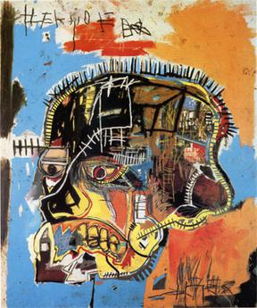
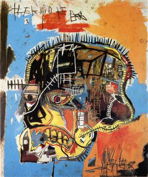
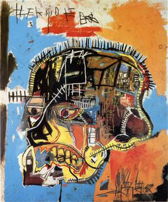
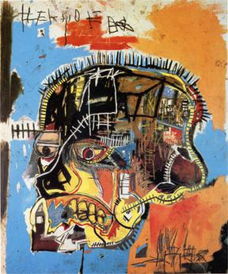

Jean-Michel Basquiat (December 22, 1960 – August 12, 1988) was an American artist of Haitian and Puerto Rican descent. Basquiat first achieved fame as part of SAMO, an informal graffiti duo who wrote enigmatic epigrams in the cultural hotbed of the Lower East Side of Manhattan during the late 1970s, where rap, punk, and street art coalesced into early hip-hop music culture. By the 1980s, his neo-expressionist paintings were being exhibited in galleries and museums internationally. The Whitney Museum of American Art held a retrospective of his art in 1992.
Basquiat's art focused on dichotomies such as wealth versus poverty, integration versus segregation, and inner versus outer experience. He appropriated poetry, drawing, and painting, and married text and image, abstraction, figuration, and historical information mixed with contemporary critique.
Basquiat used social commentary in his paintings as a tool for introspection and for identifying with his experiences in the black community of his time, as well as attacks on power structures and systems of racism. Basquiat's visual poetics were acutely political and direct in their criticism of colonialism and support for class struggle. He died of a heroin overdose at his art studio at the age of 27. On May 18, 2017, at a Sotheby's auction, a 1982 painting by Basquiat depicting a black skull with red and black rivulets (Untitled) set a new record high for any American artist at auction, selling for $110.5 million. Basquiat's art has inspired many in the hip hop music community such as Jay-Z.
Basquiat's art focused on recurrent "suggestive dichotomies", such as wealth versus poverty, integration versus segregation, and inner versus outer experience. A middle period from late 1982 to 1985 featured multi-panel paintings and individual canvases with exposed stretcher bars, the surface dense with writing, collage and imagery. The years 1984–85 were also the main period of the Basquiat–Warhol collaborations, even if, in general, they were not very well received by the critics. A major reference source used by Basquiat throughout his career was the book Gray's Anatomy, which his mother had given him while he was in the hospital aged seven. It remained influential in his depictions of internal human anatomy, and in its mixture of image and text. Other major sources were Henry Dreyfuss' Symbol Sourcebook, Leonardo da Vinci's notebooks, and Burchard Brentjes' African Rock Art.